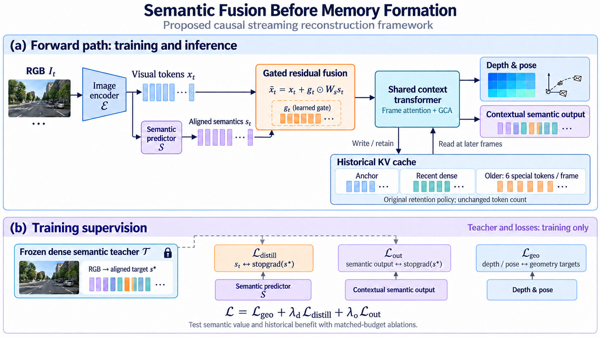

01 · Problem and Objective
研究目标是在 LingBot-Map 的 RGB 流式重建中引入语义，使模型同时获得几何与语义输出，并进一步改善历史信息对后续重建的作用。输入仍是连续 RGB，输出为每帧深度、相机位姿和与图像位置对齐的语义特征。
LingBot-Map 将历史分为固定锚点、近期密集窗口和旧帧摘要。较旧帧退出窗口后，密集图像 token 被丢弃，只保留 camera、anchor 和四个 register token 的 KV。压缩降低了历史存储开销，也限制了后续帧能访问的信息。
核心问题是：在相同历史 token 配置下，语义能否帮助模型形成更有用的摘要？方案将语义融合放在历史状态形成之前，使它参与特征聚合、缓存写入和后续读取。当前阶段为方法设计与实验计划，几何收益尚待验证。
02 · Motivation and Related Work
连续观测中，视角、光照和遮挡会改变局部外观。密集语义特征可以补充区域类别和上下文信息，有可能帮助模型保留较稳定、可区分的历史线索。预期收益来自更有效的特征聚合与历史读取，而不是根据类别直接推断深度。
语义相似不能替代几何对应。不同位置的同类区域可能具有相近语义，同一物体也包含不同深度与方向的表面。因此保留原有视觉特征与几何监督，通过可学习融合控制语义的影响。
ConceptFusion 提供像素对齐开放词汇特征及三维融合的参考；SLARM 提供语言特征监督与重建结合的参考；LingBot-Map 提供流式上下文与缓存结构。三者共同支持这一设计入口，但不能直接证明写入前融合会改善几何。
SemGauss-SLAM 的消融进一步说明监督位置的重要性：room0 上移除特征损失后，语义指标下降，而对应的轨迹与深度误差没有变化；语义 BA 的移除才带来几何退化。需要明确语义参与几何预测的实际路径，并通过独立对照确认收益来源。
03 · Architecture

当前图像经编码器得到视觉 token x_t。轻量预测器 S 从同一份视觉特征产生空间对齐的语义 s_t，再通过投影 W_s 与门控 g_t 注入主干。融合保留原视觉特征的残差，门控学习语义注入强度；它不预先代表经过校准的可靠性。
融合后的 token 进入帧内注意力和 GCA。特殊 token 在聚合图像信息时已经接触语义，各层由这些表示形成 Key/Value，并按原有策略写入缓存。后续帧通过 GCA 读取历史，得到深度、位姿和上下文语义输出。
语义进入 memory 的前向路径为：语义预测 → 图像特征融合 → 特殊 token 聚合 → 缓存 KV。缓存保存的是融合后的连续表示，不是独立的类别标签表，也不将六个特殊 token 解释成六个对象。
第一版不改变锚点、窗口和旧帧 token 的保留规则，也不新增对象槽位。比较时保持相同序列长度与 KV 配置；旧帧每帧六 token 仍随序列长度增长，不称为严格固定总容量。
x_t = E(I_t), s_t = S(x_t) x̃_t = x_t + g_t ⊙ W_s s_t Shared context(x̃_t, historical KV) → depth / pose / semantics + new KV
04 · Training and Gradient Flow
采用冻结的密集语言对齐教师，例如 LSeg，生成与学生输出位置对应的语义目标。先训练轻量预测器完成蒸馏，再联合训练融合模块、共享上下文 adapter 与输出头。教师和图像编码器冻结，教师目标停止梯度。
训练包含三项损失：L_distill 监督融合前的语义预测，确保注入分支学习教师语义；L_out 监督共享上下文之后的语义输出；L_geo 沿用基座的深度和位姿监督。第一版不加入历史语义重建 loss。
以两帧近期窗口为教学例子：F4 完成语义融合并形成 KV，F5、F6 仍能访问其密集历史；到 F7，F4 仅保留特殊 token 的 KV。F7 的几何误差可沿 GCA 回到 F4 的历史状态，再回到 F4 的融合过程，从而训练语义如何服务后续几何。
该历史梯度要求训练片段覆盖写入与读取，并保持缓存可微。直接复用 detach 后的推理缓存无法训练过去的写入。推理阶段只执行前向，保留轻量语义预测器与融合模块，不运行教师或在线反向优化。
L = L_geo + λ_d L_distill + λ_o L_out L_geo(F7) → GCA → KV(F4) → shared context(F4) → fusion(F4)
05 · Central Hypothesis and Experiments
核心假设：正确对齐的语义在历史状态形成前参与融合，可以提高压缩历史对后续几何预测的可用性。验证需要区分语义信息、额外参数、额外监督和当前帧增强四种可能来源。
决定性对照是输出端融合与写入前融合。两组都具备语义预测与监督；输出端版本只在最后 GCA 之后融合，融合结果不写回缓存；写入前版本在上下文形成之前融合。只有后者带来额外的后续几何收益，才支持历史状态受益的解释。
加入同规模普通特征分支和非语言视觉教师对照，控制新增容量与一般特征监督。正确对齐和打乱语义的比较用于诊断区域信息是否重要；由于打乱会引入分布偏移，需要结合匹配的重训消融，而不是仅凭损坏输入后的性能下降下结论。
评测同时报告深度或点云精度、完整度、ATE/RPE、跨帧一致性及速度、显存。按历史间隔和未见场景分别统计，并检查多序列结果的稳定性。仅语义分割提高不能替代几何证据；仅优于原模型而不优于输出端融合，也不足以证明 memory 收益。
| Comparison | Evidence Sought |
|---|---|
| Matched geometry baseline | 排除额外微调收益 |
| Extra feature branch / visual teacher | 排除参数量与一般监督收益 |
| Decoder-only / pre-memory fusion | 定位历史形成位置的作用 |
| Aligned / perturbed semantics | 检查正确区域语义的作用 |
| Geometry + completeness + trajectory + cost | 确认收益与代价 |
06 · Contribution and Implementation Plan
候选贡献是让语义明确参与流式历史表示的形成，并通过受控实验解释其几何用途。门控、蒸馏和语义输出头本身不构成充分创新；方法价值取决于能否定位历史利用中的具体问题，并在相同缓存配置下取得不能由额外容量或当前帧增强解释的收益。
实施顺序为：复现匹配预算的几何微调基线，训练密集语义预测器，实现输出端融合与写入前融合，优先完成这组核心比较。确认收益后，再根据不同历史条件下的结果决定是否进一步修改状态保留方式。
最终输出为几何与对齐语义，可继续支持开放词汇区域查询。实例关联和动态分解不纳入第一版。当前工作的重点是验证语义是否让保留下来的历史对后续重建更有用。
Sources: LingBot-Map · ConceptFusion · SLARM · SemGauss-SLAM